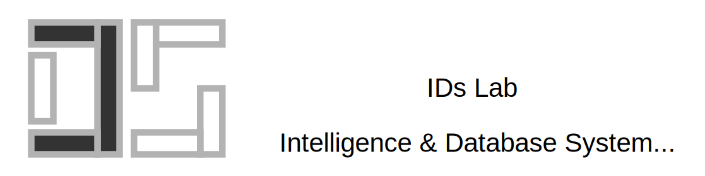

IDs Lab | SCU
@SCU. Chengdu Sichuan 610022

Welcome to IDs Lab!
IDs Lab (Intelligence and Database System Lab) is from the Department of Computer Science at SCU, led by Prof. Tang.
The team at IDs Lab focus on the following research areas:
- Distirbuted Deep Learning Systems
- Databases Systems (DB4AI and AI4DB)
- Artificial Intelligence Security
We are seeking Ph.D. and Master students who (a) really like to do research, (b) own project experience in system (DB or AI), (c) strong background in AI algorithm. We are also open to working with undergraduate students. You are welcome to contact Prof. Tang with email for details.

news
| Jun 26, 2025 | Congratulations to Yibo, Zhaoyi, Yuseng, Yufei, Jingqi, and Tengda on completing their bachelor’s degrees and heading to Purdue, Maryland, UVA, HKUST, and Tsinghua for graduate studies, with Yibo, Zhaoyi, Yuseng, and Yufei pursuing PhDs, and Jingqi and Tengda pursuing master’s degrees! |
|---|---|
| Jan 15, 2025 | Congrats to Zhengmao, Dengchun, Zetao, Tingfen on the acceptance of mLoRA to VLDB’25! |
| Dec 12, 2024 | Big Congrats GPTuner to be selected as SIGMOD Research Highlight Awards 2025! |
| Jun 7, 2024 | Congrats to Tingfeng, Yinghao, Ziling, and Yiheng on the acceptance of DLRover-RM to VLDB’24! |
| May 2, 2024 | Congrats to Zhiyuan, Zhaoyi, and Tengda on the acceptance of BadPart to ICML’24! |
latest posts
selected publications
2025
- VLDBmLoRA: Fine-Tuning LoRA Adapters via Highly-Efficient Pipeline Parallelism in Multiple GPUs2025
2024
- ICMLBadPart: Unified Black-box Adversarial Patch Attacks against Pixel-wise Regression TasksIn Forty-first International Conference on Machine Learning, 2024
- VLDBGPTuner: A Manual-Reading Database Tuning System via GPT-Guided Bayesian OptimizationProc. VLDB Endow., May 2024
- VLDBDLRover-RM: Resource Optimization for Recommendation Models Training in CloudMay 2024
- SIGMODA Demonstration of GPTuner: A GPT-Based Manual-Reading Database Tuning SystemIn Companion of the 2024 International Conference on Management of Data, May 2024